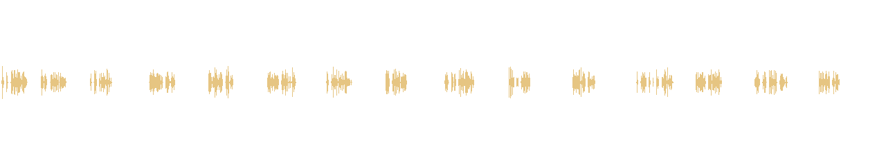
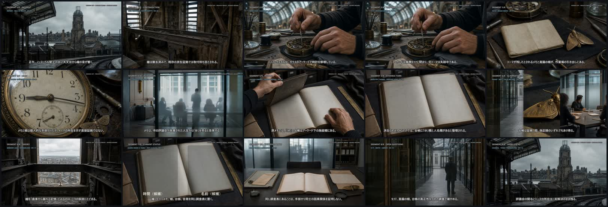

visual_grammar
H.264 essence exact match d4a7141f34347fecc90d5ba4949889e7c62cf2a7484647480986cf670967e843
Does the retained raster grammar remain legible when heard with narration?
PRIVATE PREVISUALIZATION · AUDIO REPAIR · S REVIEW
既存180秒pictureとburned subtitleを保持し、既存15字幕文だけを日本語synthetic narration化した修復候補です。`PARTIAL_PRODUCTION_SLICE` 180/720であり、Episode 1完成・final voice・rights・canon・production・publicationではありません。
ad692cd068320db02db787a80bef8a0809a0bdcce0fddfad4c5543454cfda94e

H.264 essence exact match d4a7141f34347fecc90d5ba4949889e7c62cf2a7484647480986cf670967e843
Does the retained raster grammar remain legible when heard with narration?
15/15 existing visual updates and burned captions retained; no picture or source-map change
Are Mira, Toma, Council, ledger, moth, and tower roles readable without adding unsupported causality?
15/15 narration cues fit and are audible inside subtitle windows; dialogue units intentionally 0
Is the neutral narration pacing natural, and is the absence of invented dialogue appropriate?
15/15 cue-window matches; burned subtitle picture essence unchanged; pronunciation-only normalizations 8
Do spoken phrases and burned Japanese captions feel synchronized and readable?
aac 48000 Hz 2ch; full A/V decode PASS; audible cues 15/15; max -3 dBFS
Are pronunciation, synthetic voice character, level, and silence gaps acceptable for this private repair candidate?
8/8 Episode segments, 12/12 source claims, unsupported/hidden bridges 0/0, new canon claims 0
Does the audible delivery preserve allegation, theory, derived evidence, and unresolved boundaries?
180/720 seconds; remaining 540 seconds; Episode completion=false
Does this repaired 180-second form justify later long-form planning without treating it as Episode completion?
| Cue | Subtitle | Audio | Burned text | Spoken text | Peak |
|---|---|---|---|---|---|
| DA-01 | 0.00–8.00 | 0.35–5.56 | 正午、ノース・ベル駅上の古い天文台から鐘の音が響く。 | 正午、ノース・ベル駅上の古い天文台から鐘の音が響く。 | -4.3 dBFS |
| DA-02 | 8.00–18.00 | 8.35–13.43 | 鐘は撤去済みで、既存の派生証拠では取付枠も空とされる。 | 鐘は撤去済みで、既存の派生証拠では取付枠も空とされる。 | -4 dBFS |
| DA-03 | 18.00–30.00 | 18.35–22.70 | ミラ・ヴェイルは、ガラスのアーケードで時計を修理している。 | ミラ・ヴェイルは、ガラスのアーケードで時計を修理している。 | -5.5 dBFS |
| DA-04 | 30.00–42.00 | 30.35–35.59 | アーケードは毎晩9:17に閉まり、兄トーマは失踪中である。 | アーケードは毎晩九時十七分に閉まり、兄トーマは失踪中である。 | -4.3 dBFS |
| DA-05 | 42.00–54.00 | 42.35–47.38 | トーマが残したとされるメモと真鍮の蛾が、作業場の引き出しにある。 | トーマが残したとされるメモと真鍮の蛾が、作業場の引き出しにある。 | -4 dBFS |
| DA-06 | 54.00–66.00 | 54.35–60.10 | メモと蛾は個人的な手掛かりだが、トーマの所在を示す直接証拠ではない。 | メモと蛾は個人的な手掛かりだが、トーマの所在を示す直接証拠ではない。 | -5 dBFS |
| DA-07 | 66.00–78.00 | 66.35–71.46 | メモは、市の評議会が放棄された人生から『分』を売ると告発する。 | メモは、市の評議会が放棄された人生から「ふん」を売ると告発する。 | -4.4 dBFS |
| DA-08 | 78.00–90.00 | 78.35–82.66 | 原メモでは、『分』の台帳はアーケード下の施錠棚にある。 | 原メモでは、「ふん」の台帳はアーケード下の施錠棚にある。 | -4.2 dBFS |
| DA-09 | 90.00–103.00 | 90.35–96.32 | 派生CASE_DIGESTでは、台帳に『分』欄と人名欄があると整理される。 | 派生ケース・ダイジェストでは、台帳に「ふん」欄と人名欄があると整理される。 | -4.3 dBFS |
| DA-10 | 103.00–116.00 | 103.35–107.73 | 台帳は証拠、囮、偽記録のいずれでもあり得る。 | 台帳は証拠、囮、偽記録のいずれでもあり得る。 | -3.6 dBFS |
| DA-11 | 116.00–129.00 | 116.35–120.89 | 鐘を『歯車から漏れる記憶』とみるのは、ミラの仮説にとどまる。 | 鐘を「歯車から漏れる記憶」とみるのは、ミラの仮説にとどまる。 | -4.1 dBFS |
| DA-12 | 129.00–141.00 | 129.35–136.72 | 鐘、9:17、メモ、蛾、台帳、告発を同じ調査表に置く。 | 鐘、九時十七分、メモ、蛾、台帳、告発を同じ調査表に置く。 | -3.7 dBFS |
| DA-13 | 141.00–153.00 | 141.35–146.62 | 同じ調査表にあることは、手掛かり同士の因果関係を証明しない。 | 同じ調査表にあることは、手掛かり同士の因果関係を証明しない。 | -3 dBFS |
| DA-14 | 153.00–166.00 | 153.35–159.95 | 9:17、真鍮の蛾、台帳の真正性を、次の調査で確かめる。 | 九時十七分、真鍮の蛾、台帳の真正性を、次の調査で確かめる。 | -3.8 dBFS |
| DA-15 | 166.00–180.00 | 166.35–170.56 | 評議会の関与とトーマの所在は、未解決のまま残る。 | 評議会の関与とトーマの所在は、未解決のまま残る。 | -4 dBFS |
fff-densou-series-source-256837a94afd521c · densou-256837a94afd521c · 256837a94afd521cadfcb676da2c3873a914ce95f11f493d5b60e15bc42f9a32
The selected primary is a repository file labeled Sample Raw Memo, not a separately delivered Densou original. Supporting structure and Raster media remain derived evidence and are not final canon.
S opens review.html and the exact revised MP4, reviews the seven axes, then returns ACCEPT_REPAIR or REPAIR_REQUIRED with cue IDs/timestamps. No 720-second extension occurs before ACCEPT_REPAIR.